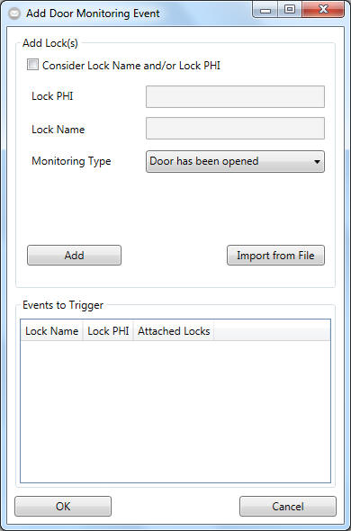

Create Events - Door Monitoring Event

In order to trigger an doormonitoring event, the EventMessenger software needs the
name and serial number informations of the lock that has fired the
doormonitoring event along with the desired type of doormonitoring event (e.g.
"door has been opend"; "closed"; "locked" "secured" and others).
Please follow these steps to create such setup:
- Please begin by adding one or more locks.
- Check the "consider lockname and/or serialnumber (phi)" checkbox if
you would like to apply a filter to this event. Otherwise, every
lockname or phi will be recognised regardless its name or phi.
- Define the name and/or phi of the lock of which you would like to be
informed about an unlocking event.
HINT:
- your input is treated as case insensitive and as a part of a whole
search phrase
Example:
If you have entered "entrance" as the name of the lock all of the
following locknames will return a positive match:
"main entrance"; "Entrance North"
- Please select a desired "doormonitoring type". You could add more
that one type by repeating steps 3 and 4.
- Click on "Add" to add the lock with its name and phi (if defined
any) and your desired monitoring type.
- Click on "OK" to finish your setup.